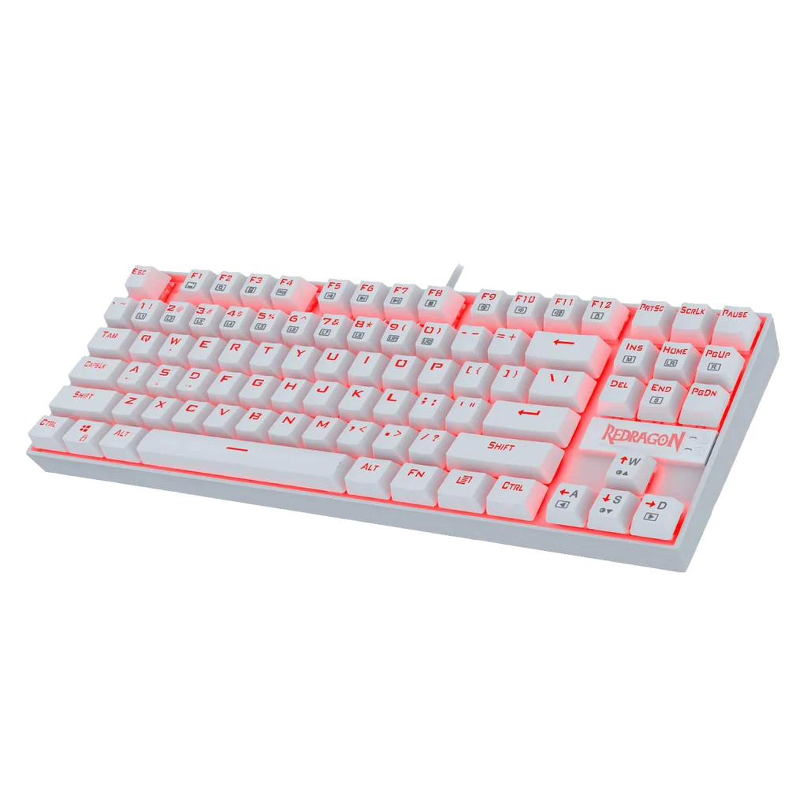
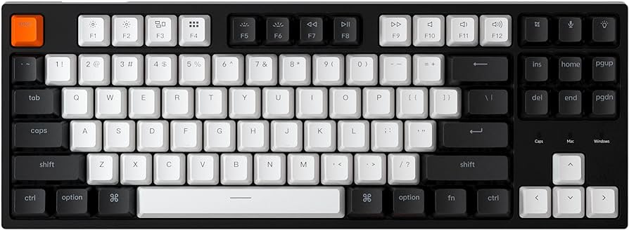
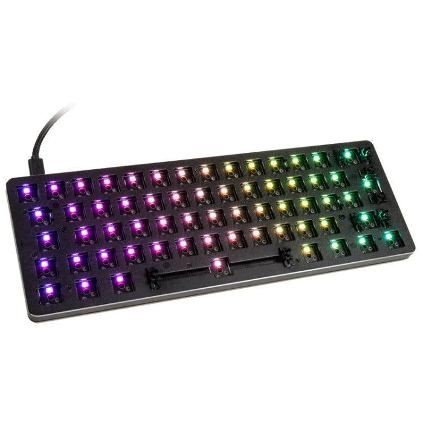
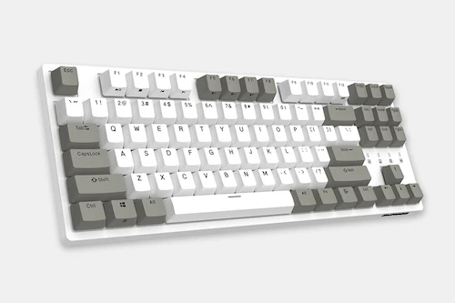
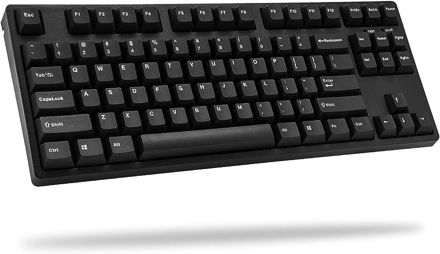
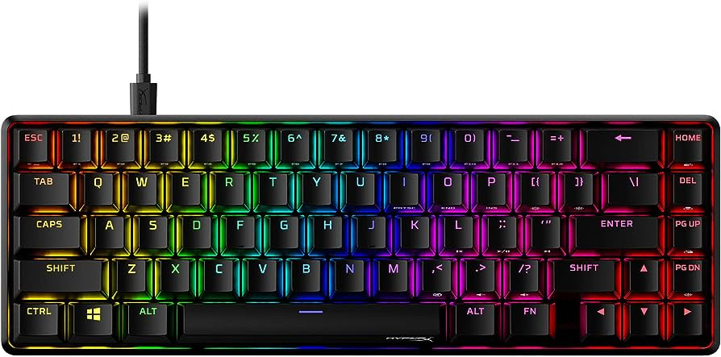
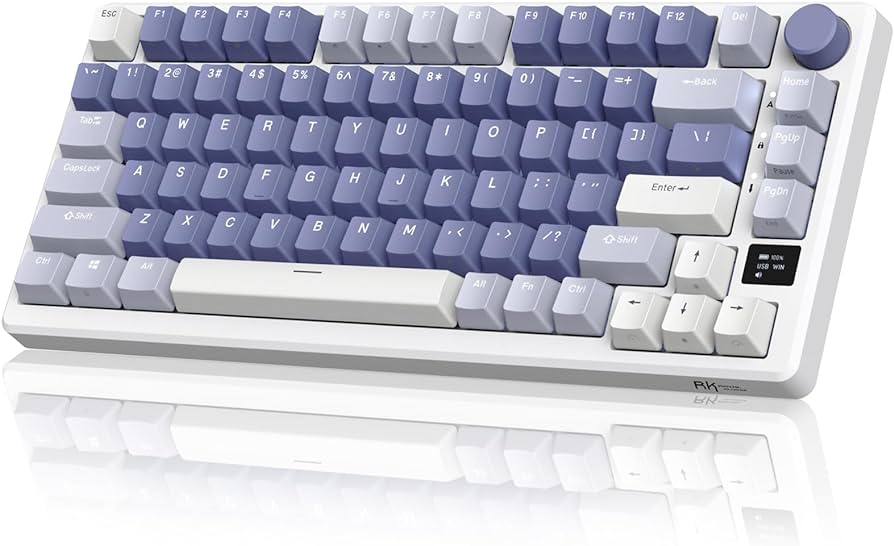
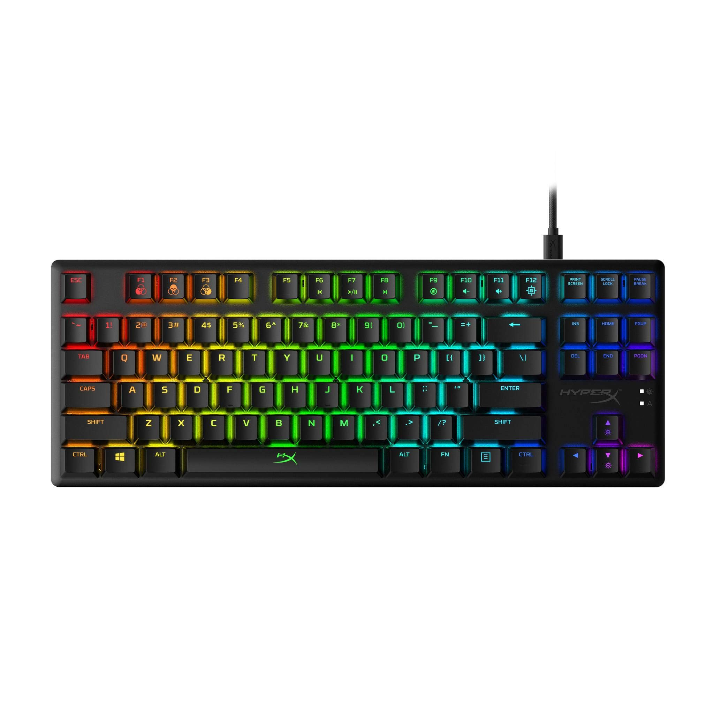

Keyboard Collection (will continue to update)
Redragon K552 (Red Lighting, Outemu Blue, White)

The one that started it all
Keychron C1 Hotswap (the one that made me crazy for this hobby lol)

sold, but keeping here for being the straw that broke the camel's back to my keyboard addiction
(Barebones) GMMK Compact 60% Hotswap

Installed Akko Lavender and random Amazon keycaps
(Mathi keyboard) Durgod Taurus K320 (No Lighting, Cherry MX Red, White/Grey)

Where I started my journey of collecting my favorite players' keyboards
(Vaxei keyboard) iKBC CD87 V2 "Typeman" (No Lighting, Cherry MX Black, Black)

My GOAT's keyboard
HyperX Alloy Origins Core 65% PBT (RGB, HyperX Red, Black)

gave it to a friend who very much needed it
Royal Kludge M75 (RGB, Kailh Speed Silver, White/Blue)

gave it to my little sister
HyperX Alloy Origins Core TKL (RGB, HyperX Red, Black)
